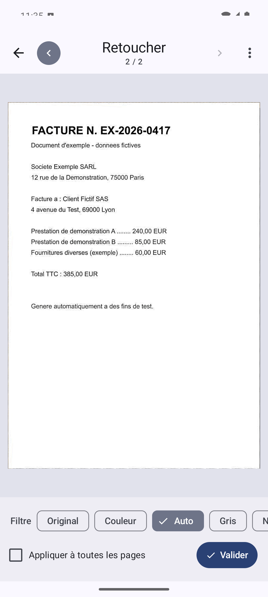
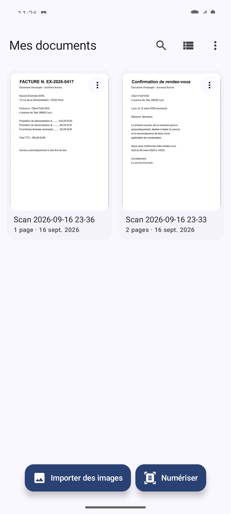
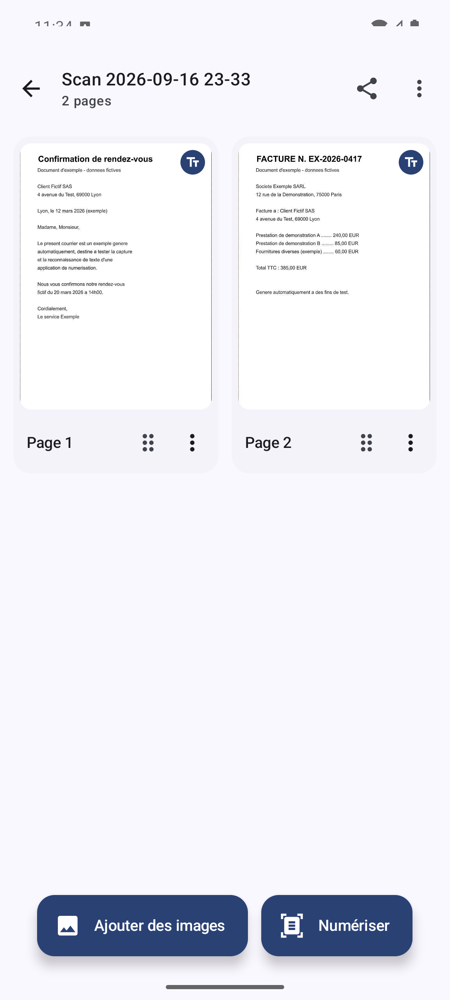
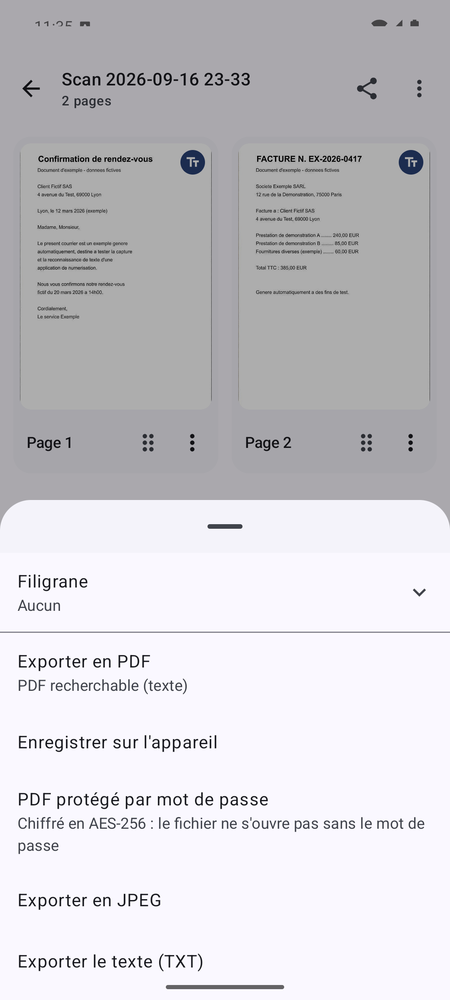
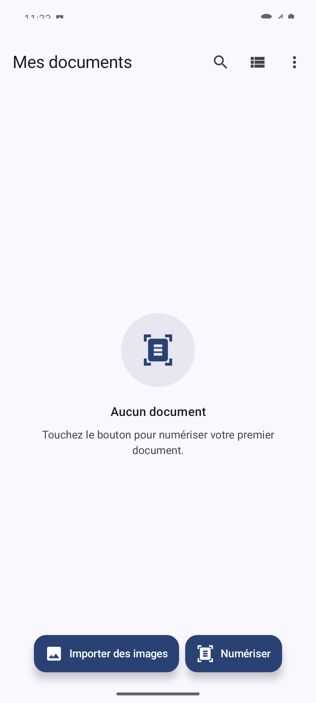

PDF Éclair transforme votre téléphone en scanner de documents : détection automatique des bords, redressement de la perspective, reconnaissance de texte et export en PDF recherchable — le tout directement sur votre appareil, sans serveur ni collecte de données.

Un pipeline complet, de la photo au document fini, pensé pour fonctionner entièrement en local.
Détection automatique des bords en temps réel, avec un contour affiché en direct et une capture déclenchée dès que le cadrage est stable. Capture en rafale pour enchaîner plusieurs pages sans écran intermédiaire, et alerte en cas de faible luminosité.
Ajustement manuel des quatre coins si la détection automatique doit être corrigée, rotation par pas de 90°, et navigation rapide entre les pages d'un même document pendant la retouche.
Couleur, Auto (contraste renforcé), Gris, Noir & blanc à seuillage adaptatif, et Tableau (fond ramené au blanc). Un filtre peut être appliqué à toutes les pages du document en un geste.
Un correcteur dédié atténue un éclairage inégal ou un reflet, réglable en quatre intensités, sans délaver les logos ni les zones déjà claires de la page.
Efface un élément indésirable de la page (gomme magique) et permet d'ajouter des annotations à main levée en trois couleurs, conservées séparément de l'image d'origine.
Reconnaissance de texte embarquée sur l'appareil (alphabet latin), lancée automatiquement après la capture ou à la demande — aucune image n'est envoyée à un service externe pour être analysée.
PDF avec couche de texte réellement recherchable et surlignable, JPEG (une image par page), TXT, ou conversion du texte reconnu en document Word (.docx) ou RTF avec mise en page reconstruite.
Filigrane texte personnalisable : quatre dispositions (diagonale, mosaïque, bandeau, pied de page), tailles, couleurs et opacité réglables. Ce qui est prévisualisé à l'écran correspond exactement au fichier exporté.
Dossiers, renommage, déplacement, recherche par nom ou par texte déjà reconnu, tri par date ou par nom, réorganisation des pages par glisser-déposer, fusion et scission de documents.
Chaque mode adapte le cadre-guide, le nombre de clichés, la découpe et le filtre appliqué au type de document scanné.
| Mode | Usage |
|---|---|
| Document | Le mode standard, adapté à toute feuille simple ou multipage. |
| Carte d'identité | Recto et verso capturés séparément puis réunis automatiquement sur une seule page A4. |
| Livre | Une seule prise de vue sur une double page ouverte, séparée automatiquement en deux pages à la reliure. |
| Tableau blanc | Fond éclairci pour une lecture nette des notes, indépendamment de l'éclairage de la salle. |
| Carte de visite | OCR systématique puis proposition d'une fiche pré-remplie vers l'application Contacts. |
De la photo au document fini, en quatre étapes.
Ouvrez l'appareil photo dans l'application et visez le document : les bords sont détectés en direct.
La photo est prise automatiquement dès que le cadrage est stable, ou manuellement — en rafale pour plusieurs pages.
Ajustez le recadrage, appliquez un filtre, corrigez l'éclairage ou ajoutez une annotation si besoin.
PDF recherchable, JPEG, TXT ou Word — avec filigrane optionnel — enregistré sur l'appareil ou partagé.
Captures d'écran réalisées sur des documents d'exemple.




Pas de serveur, pas de compte : la capture, la retouche, l'OCR et l'export restent entièrement locaux. La version gratuite affiche des publicités (Google AdMob), sans lien avec vos documents. Le détail complet est dans la politique de confidentialité.
Lire la politique de confidentialitéNon. La capture, le traitement d'image, la reconnaissance de texte et l'export fonctionnent entièrement hors ligne, y compris en mode avion.
Vos documents, non : ni compte, ni serveur, ni système d'analyse d'usage ne les concerne. La version gratuite affiche en revanche des publicités (Google AdMob), qui impliquent la collecte d'un identifiant publicitaire par Google — sans rapport avec vos documents. Voir la politique de confidentialité pour le détail.
Oui : la reconnaissance de texte génère une couche de texte invisible intégrée au PDF, que l'on peut sélectionner, copier ou surligner dans un lecteur PDF classique — le texte n'est pas qu'affiché à l'écran de l'application.
La reconnaissance de texte couvre actuellement les langues à alphabet latin.
Oui, la bibliothèque permet de fusionner plusieurs documents en un seul, d'extraire une sélection de pages vers un nouveau document, et de réorganiser les pages par glisser-déposer.